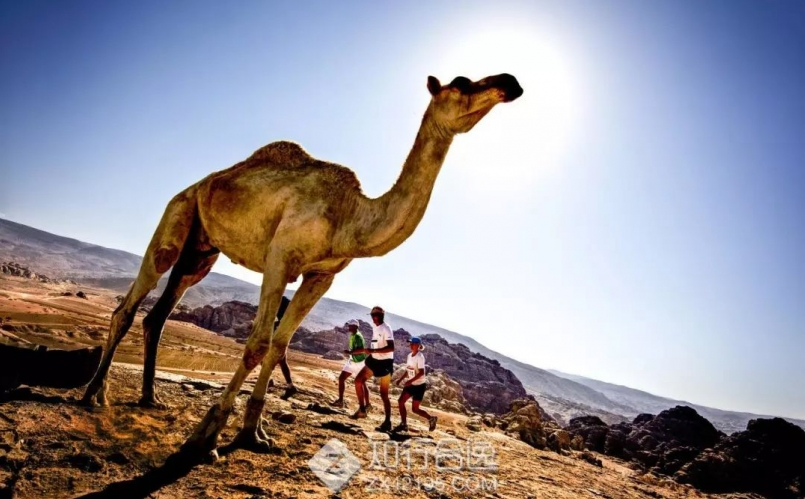
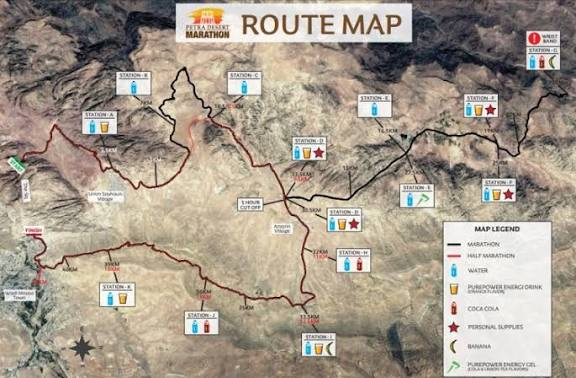
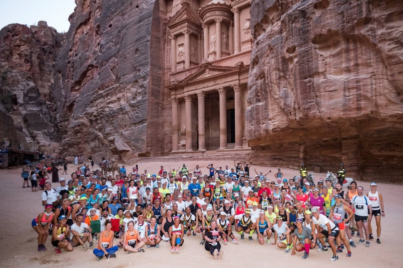

約旦佩特拉沙漠馬拉松 (Petra Desert Marathon)
世界新七大奇蹟 ｜ 清晨包場獨享千年神殿，在 40°C 烈日荒漠展開極限長征
全球最頂級的古文明極限長跑賽事之一。賽事以聯合國教科文組織世界文化遺產——佩特拉「玫瑰紅城市」為核心，僅限約 200 名全球跑者於清晨獨享這座千年峽谷古城，穿梭於卡茲尼神殿、乾燥戈壁與灼熱山脊之間。
• 神殿朝陽起跑：清晨穿越 1.2km 蛇道巨石裂縫，在卡茲尼神殿前震撼鳴槍。
• 沙漠多變地形：細軟深沙、碎石戈壁、鬆散岩石與高山山脊頻繁交替。
• 高溫垂直魔王坡：正午氣溫直逼 40°C，迎戰長達 3 公里、爬升近 300m 的黑色陡坡。

賽事基本資訊與核心規格
嚴酷沙漠氣候與高低落差，對跑者耐熱與野外定向能力提出極限考驗
• 舉辦月份：每年 9 月初（固定賽期）。
• 關門限時：全馬 7 小時（半馬亦 7 小時）。
• 參賽規模：限量精緻約 200 名跑者。
• 累計爬升：+1,074m 至 +1,297m。
• 累計下降：-1,024 公尺以上。
• 地形趨勢：峽谷穿出、戈壁起伏至山脊攀升。
• 路面屬性：石板古道、軟沙、碎石與陡坡。
• 難度分級：極高（高溫沙漠越野）。
• 環境特點：乾燥無遮蔭荒原與強烈熱浪。
• 國際認可：AIMS 國際長跑協會成員。
• 媒體評選：全球最值得期待的五場馬拉松。
• 賽事組別：42.195km 全馬組與 25km 半馬組。
賽道結構與關鍵魔王路段剖析
三大迥異賽段：幽暗蛇道出發、廣袤玫瑰戈壁與後段 31km 酷熱陡坡攻頂
• 階段一（0-6km 古城晨曦）：穿過 1.2km 蛇道裂縫，在卡茲尼神殿前出發，經過羅馬露天劇場與石窟柱廊大道。
• 階段二（6-31km 戈壁沙漠）：翻過小山進入廣袤沙漠，紅砂岩山脈隨日照轉化為金色與紅玫瑰色，偶遇貝都因牧羊人帳篷。
• 階段三（31-42.195km 山脊登頂）：頂著高溫攻上山脊，俯瞰奔馳過的沙漠全景與遠方以色列地平線，順坡衝線。
• 痛點剖析：通過 31km 後，在正午無遮蔽之 38°C~40°C 酷暑下，直面長達 3 公里、垂直爬升近 300 公尺（累計爬升近 500m）的黑色柏油路面。吸熱柏油讓地面溫度極高，體能極易瞬間枯竭。
• 通關策略：前 30 公里務必壓低配速保存體力，陡坡段切換為大步登山走，定時淋水降溫，抵達山頂遮陽補給站即見曙光。

報名機制與多日全包跑旅套裝
極致限額 200 名：官方綁定多日探索套裝，兼顧極限參賽與中東深度巡禮
• 參賽機制：不單獨販售單日號碼布。
• 套裝內容：包含賽事資格、安曼星級飯店、古城通行證、專車接駁與沙漠晚宴。
• 人數上限：嚴格限制約 200 名。
• 報名時程：出發前 90 天截止或額滿。
• 延伸套裝：夜宿「月亮谷」瓦迪拉姆紅沙營地。
• 特色體驗：乘坐 4x4 吉普車穿越奇岩峽谷。
• 文化盛宴：品嘗貝都因柴燒地燜烤肉（Zarb）與傳統紅茶。
• 星空銀河：無光害沙漠欣賞震撼銀河星空。
• 死海漂浮：造訪陸地最低點，體驗無重力漂浮。
• 穆吉峽谷：世界最低溪流峽谷，水流攀爬瀑布排酸。
• 傑拉什古城：參訪中東龐貝古城，保存最完整羅馬柱廊。
• 自然保護區：邂逅努比亞頁羊等稀有沙漠物種。
• 接送安排：大會提供 Queen Alia 機場定點專車。
• 行前說明會：賽前一日舉行深度賽道路況勘查說明。
• 年齡限制：全馬需滿 18 歲，25km 組需滿 16 歲。
• 保險要求：建議購買含海外緊急醫療之後勤保險。
荒漠後勤物流、住宿安排與領物
清晨 5:15 佩特拉遊客中心集合：徒步蛇道進城與終點營地接駁
• 清晨集結：5:15 於佩特拉遊客中心集合，由工作人員整隊出發。
• 暗夜進城：集體徒步 2 公里進入古城，其中 1.2 公里穿過漆黑安靜的西克蛇道。
• 終點位置：設於沙漠出口營地，完賽後搭乘大會專屬空調巴士返回飯店。
• 無信號警告：沙漠賽道深處手機完全無信號，賽事全程由巡邏吉普車戒護。
• 基地小鎮：瓦迪穆薩（Wadi Musa），環抱佩特拉古城入口的山城小鎮。
• 飯店等級：官方套裝通常配置優質四星至五星級沙漠景觀飯店（如 Mövenpick 或同級）。
• 生活機能：小鎮設有換匯點、傳統阿拉伯餐廳與藥局，賽前物資補給便利。
• 充足睡眠：賽日前晚需提早就寢，以應對清晨 4:00 起床的極早作息。
• 領物流程：抵達約旦安曼或瓦迪穆薩飯店時統一發放物資。
• 物資禮包：官方沙漠透氣紀念跑衣、號碼布、計時晶片與防風保暖毯。
• 賽日寄物：起跑前可將完賽乾淨衣物交給大會卡車，直接運送至終點營地。
• 防砂檢查：賽前簡報會展示防沙套正確綁法，確保裝備妥當。
沙漠極端環境應對、防沙裝備與補給
起跑 22°C 至正午 40°C 的溫差考驗：防沙套、水袋包與全程 14 處水站
• 氣溫變化：清晨起跑約 22°C 涼爽，午前沙漠快速升溫至 38°C~40°C。
• 濕度水平：空氣極度乾燥，汗水瞬間蒸發，容易讓人忽視水分流失。
• 日照曝曬：荒漠毫無樹木遮蔭，紫外線極為強烈。
• 風沙特點：午後偶有乾燥陣風揚起細沙，需護目防風。
• 防沙鞋套（Gaiters）：必備裝備！魔鬼氈固定於鞋緣，防止細砂石磨破腳皮。
• 跑鞋推薦：選擇深齒紋大底、鞋面密織防砂之長距離越野跑鞋或厚底鞋款。
• 水袋背包：強制建議攜帶 1.5L 至 2L 水袋包或雙前置軟水壺。
• 防曬三件套：抗 UV 鬼蝠式防曬帽（護頸）、偏光太陽眼鏡、高係數防曬乳。
• 水站密度：全程密集設有多達 14 處補給水站，提供瓶裝水與電解質飲料。
• 降溫海綿：高溫站點提供冰涼浸泡水桶與海綿供跑者全身沖淋降溫。
• 鹽錠戰術：大量流汗易導致低血鈉症，建議每 45-60 分鐘服用 1 顆高濃度鹽錠。
• 固態補給：自備能量膠 5-6 條，搭配大會水果保持血糖穩定。
賽後文化巡禮與系列下一站
戴上古城刻紋獎牌，死海漂浮放鬆四頭肌，啟航前往加州一號懸崖公路
• 死海無重力漂浮：賽後驅車前往死海，浸泡在富含礦物質的高鹽度湖水中，全身零重力漂浮排酸，塗抹黑泥滋養肌膚。
• 瓦迪拉姆沙漠慶功營火：夜宿貝都因特色帳篷，與來自全球的勇者圍坐營火，分享烈日陡坡的征服故事。
• 代爾修道院隱密步道：賽後以輕鬆徒步從小佩特拉翻山進入古城，登上山頂茶亭遠眺約旦最雄偉峽谷日落。
